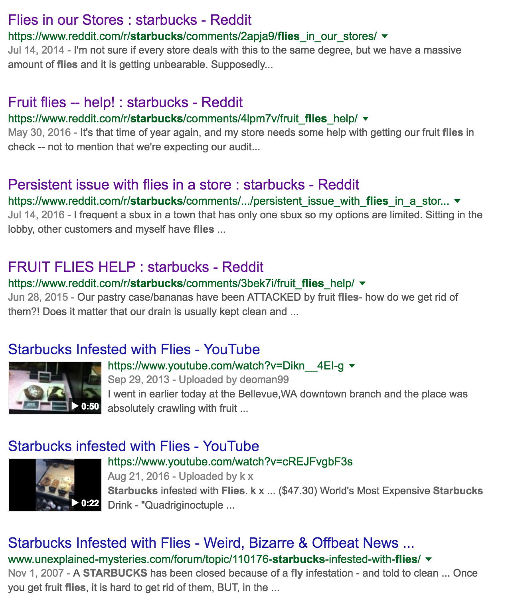

What is with all the Flies at Starbucks?
Ugh.
I have been working remotely for the last two and a half years, and in this time I've acquired some pretty bad and unhealthy habits, the worst of which is essentially sitting in one place all day staring at my computer for extended periods of time. Lately, the effects of this has really started showing; I have a very persistent sore neck/back (probably due to my less than ideal posture), frequent headaches, and dry and sore eyes.
Recently, I've been forcing myself to move around more and to take short breaks every hour or so to give my eyes a break. Part of this routine has been to not work only from home and instead to walk around and work at coffee shops. My day pretty much consists of hopping between the various Starbucks, Tim Horton's, and Second Cups that are within walking distance of me. So far this has been working pretty well (except that I seem to crash the Starbucks' routers periodically when I hop on hangouts for meetings…).
What I really don't understand though is why out of six coffee shops I frequent, the only ones that have a fly problem are the two Starbucks… I thought it was just a problem with my locality but wow…

What's truly troubling is what one person who works/manages a Starbucks has to say:
Supposedly Starbucks policy is that we just pretend they aren't there and take no measures to rid our stores of these pesky creatures.
People at Starbucks, you really need to get this problem under control, it's really off-putting for customers, and just very disturbing and unsanitary. :(